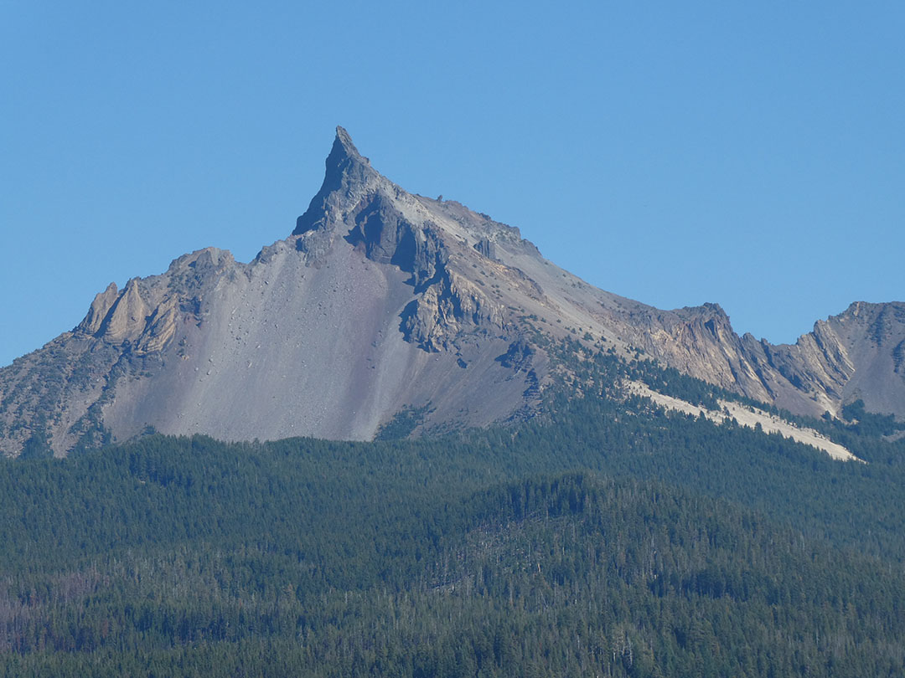

Month 2: Olympic NP, Oregon Coast, Mt. St. Helens,
Crater Lake, Lava Beds NM, Lassen NP ....
Redwoods.
October 16, 2022: It is hard to believe that another month has passed
since leaving our house. It has been a month filled with many
adventures, but also tremendous sadness. Bad news first: We had to
put Zara to sleep on September 27 after a trip to the vet revealed
that she had cancer. It was horrible. The only consolations are that
we had 10 great years with her, and that she did not suffer. Below
there is a picture of her from her early years, and one of her with
Katherine trying to make her feel good. She got some ice cream from DQ,
and lots of love and pats and rubs in her last days. Loyal to the end
to John in particular, she left a hole in all our hearts. Luna moped
for days, but found a ball in the Crater Lake campground that cheered
her and us all.
Last affections
Zara
Luna's ball
Our campground near Crater Lake was beautiful, near Thiessen Peak, the `lightening rod of the Cascades.'
Its unusual shape and tall height means it gets struck often by lightening. Our (camping) neighbor
told a story of a Disney photographer staying at this campsite. After a week's work taking photographs
for Disney at Crater Lake, he got caught in a thunder storm at the campground. He set up two
cameras with telephoto lenses and laughed and laughed like a `crazy man' as he took hundeds of
photos of lightening striking the peak. It is a remarkable peak, and an impressive view from
the campsite. Nicest "office view" I've ever had.

View of Mt. Thiessen from campground
On a human interest note, I'll mention how enjoyable it is to meet and talk with other campers.
Many are retired, ---few other families doing camper home-schooling now--- and many are living
in their RVs. Indeed, living in an RV is so popular now, it can be hard to find an RV park
to stay in on the fly. In thw town of Centralia, WA it was park number 4 that finally had
some space for us, and that was `overflow' camping (by the laundromat). The majority of the
remainig RV park semi-permanent residents tend to be young-ish working males. And, boy,
are the setups deluxe. Many are easily 40 ft in length, and folks are clearly watching
big screen tv, streaming videos, taking showers in huge bathrooms, using their convection ovens, and
generally living quite comfortably. Our Alaska plates always attract notice, and many
of the males have worked in AK, either in the military or as fishermen. I'm getting ideas
for retirement ... though the miniature camper van is more my style.
The weather continues to be non-stop sunny and hot. At times very
hot. After becoming so attuned to the annual weather patterns in Alaska,
where it has snowed already this October, it is both very odd and very
cheering (for me). Simply put, I love hot and sunny weather. John suggested we
escape to the California coast this weekend (Redwoods NP and SP), and
the drive from 98 degrees and sunny was welcomed by John, and a bit
despressing for me. The redwood trees are so tall that between the
fog and the tree canopy it was dark in the camper by 4 pm. Nonetheless,
redwoods are amazing trees, resilient and ancient and beautiful. This
park reminds me of my dear friend Eleanor, who since her wedding has
come here many times with her husband because she likes it so much.
Katherine very much wanted me to include two highlights from
the last month. In addition to `junior ranger' programs, some
of the parks have `Bark ranger' programs. Luna was up to the
task at Kalaloch in Olympic NP (on the ocean), promising to
`stay on trails, always be on a leash, make sure she is picked
up after, and other obligations. John has commented
repeatedly that `Luna has been promoted to top dog, despite
her poor preparation for the job.' :-) (He is as loyal to
Zara as she was to him clearly.) Luna is doing an excellent
job!
The other highlight is to mention our experiences
in Lava Beds National Monument.
Pride of being a bark ranger
Swearing in ceremony
In a hot, dry, and somewhat god-forsaken part of northeastern
California, a gigantic shield volcano Medicine Lake has had
many small eruptions. Lava oozed out and in the process of
cooling created many lava tubes. The park service has made
many of them safe for self-guided tours. With head lamps
and at least 30 extra AAA batteries, we headed out for a 8.5 hour
lava tube tour on our second day there. Katherine absolutely
loved it! We squeezed through many particularly tight places,
tubes whose height was only one foot tall in part, or longer
two feet tall tubes. Katherine was quick and nimble; her
parents came out bruised and stiff. Some passages 10 feet
long might take John and me 45 minutes to get through. I finally
put my foot down at a particularly tight spot so we did not
get to sign the register at the end of the cave to Katherine's
great dismay. (On the other hand, she did comment to John that
"I'm not sure other people's parents would do this with their
kids.") We misread the map only once, and though I never
thought we were not going to make it out, I did announce
upon finally seeing daylight again that I would never
take such a cave tour again. No pictures to share, since
it was all in the dark, but both John and I think this will
be the highlight of all the parks for Katherine.
Before starting to close, I include some pictures of one of my all-time
favorite parks: Crater Lake. It is simply beautiful beyond
words. We had yet another glorious day there, and while
John and Katherine ran off in embarrassment, I went swimming
in my underclothes. There was no way I was going to miss
the opportunity to swim in Crater Lake. No way! For those of you
who knew me 20 or more years ago, I have also included a
screen capture of a photo of John and me at Crater Lake
back in 1999 when John drove me out to CA for my post-doc.
We had brown hair, were wildly in love (or at least one of
us), and had a most wonderful time at Crater Lake. John
still teases me of the 3000 pictures I took of the Phantom
Ship, and this all before I owned a digital camera.
Crater Lake
More Crater Lake
Not that cold in truth
The phantom ship
Still love the phantom ship!
Walk down memory lane ...
And finally, in closing, I am posting some photos of our assent
of Lassen Peak, Mt. St. Helens, an elk in our campground
in Olympic NP, interesting signs, and other sundry images.
Keep in touch. ---Elizabeth
Elk in Olympics campgroundLunch at Mt. St. HelensMt. St. HelensLava bedsClimbing LassenSummit of LassenSulphur bedsMagma is dangerousBoiling mud in LassenLocal sign (read carefully)Factory tour was greatGolden mantled squirrel
P.S. For Rich, who asked:
Map, Part IMap, Part 2
Month 1: Leaving Fairbanks, off through Canada, and back into the US.
Friends and Family (hereafter known solely as friends): As many of you know, our plan
for fall 2022 has been to take a long circuitious route through US National Parks on our
way to New Hampshire. It is sabbatical year, and Katherine will be home schooling with
Dad in the fall (Mom would drive her crazy), and at seventh grade in New Hampshire in the spring.
We have been planning this for years, and after many a bump in the road before leaving (COVID,
Zara illness) we finally left Fairbanks on September 1. We actually left our house on August
19th, but there were so many things to take care of, not the least of which was an emergency
trip from Denali NP to Fairbanks for Zara (she is fine now) that we finally left the state on
the first of September.
Before our departure, my mind held opposing emotions: excitement at the prospect of our
imminent departure for a long-anticipated adventure, but also a sadness at leaving behind
things that I love about Alaska ---friends, Katherine's friends and families,
the boreal forest, the Equinox, a satisfying daily rhythm, my skis, our house, etc.
Not since college have I left my home for one year's duration.
Indeed, with these thoughts in mind I thought I would try to write occasional
letters to you all to keep in touch as we explore the lower 48. My brother
too asked for a map with destinations, so that he and his wife could keep
track of us. It will be easier to write one note, so please excuse the mass
mailing.
Our itinerary in a nutshell has been Denali NP (gotta start with the best!), through Canada
along the Cassiar, crossing the border at Abbotsford, then North Cascades NP, Mt. Rainier
NP, and now Olympic NP. The weather has been truly magnificent, with smoke in North Cascades,
but other than that picture-perfect.
For Rich (brother), check out our route to the right. I am writing this from Olympic NP,
where we hope to stay for many days, decreasing the amount of driving at last. Yesterday
we had a wonderful visit with a long-time friend from Maine who treated us
to a lovely dinner in Tacoma, before heading out again. I hope we get to see
some of you too. COVID has certainly made us rethink the important things in life,
and having good friends and adventures is high on the list.
The highlights for the first weeks for sure were BEARS! BEARS! BEARS! everywhere!
Grizzlies in Denali NP (late August) and black bears and grizzlies in Canada. At
a campground in Canada, Meziadan Lake, as we were selecting a site, a grizzly
walked through our first choice. Then it hung out in the bushes near our second choice campsite,
walked by several times, and was generally a bit reluctant to leave even as the
campground hosts chased it in a truck and whooped at it. Gotta love a campground
when there are so many bears around (and you are safe in a camper).
Katherine's favorite stop so far was Boya Lake on the Cassiar. It was a gorgeous spot, and we rented a kayak
and canoe to paddle around. For me, I think Mt. Rainier has been the highlight, likely soon to be overtaken by
Olympic NP. The smoke around the North Cascades did not obscure the view too much, and the sun glowed orange
as it set. In one of the photos below, taken in Hope, BC (where we thought about Katherine's good friend), you can see
a helicopter dropping water on a wildfire. The campsite at Mt. Rainier was in old growth forest, and
the lush feeling of the hundreds-year-old trees is calming and magnificent. Katherine counted some
rings on one downed trunk and we were reminded of her toddler counting: "One. Two. Three.
A lot!". The volcano (Mt. Rainier) was hidden for the majority of two days and then on our
last afternoon there, as we started our hike, it came out. And stayed out. Just breathtaking.
As you can see, I am running out of steam so will let the photos tell the story. Best wishes to all for
the start of the school year, or for the start of the autumn. Keep in touch. ---
Elizabeth (Sept 18, 2022)